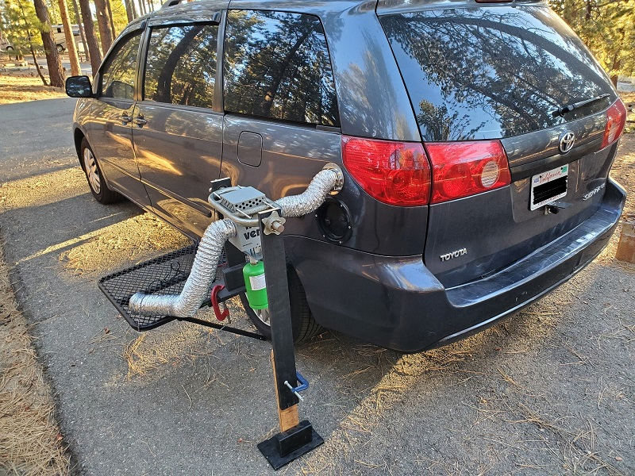
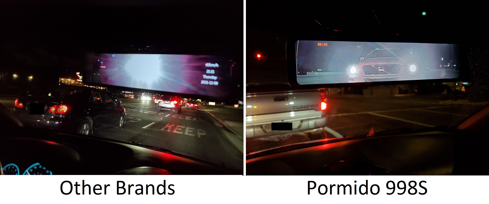
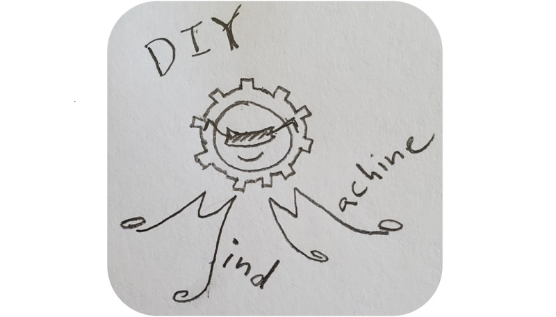

Here are some equipment reviews and additional discussions.
May 2025: The best bed for a Minivan Camper Read more

January 2022: Heating a minivan with a Zodi Hot Vent Tent Heater. Read more

December 2021: Pormido 998S Rear View Mirror Dash cam review. It's awesome! Read more

August 2025: The DIY Mind Machine. A free tool that helps you meditate. Try it! Read more
February 2024: Improved Car Camping Water Dispenser Read more
February 2024: P90X - Fifteen years later Read more
January 2025: Homemade Kefir Smoothie from Raw Unpasteurized Whole Milk.
This is part of my healthy gut routine. Read more
May 2025: How to repair Antilock Brake Error, C0256 Error Code. Read more
May 2025: Wix Gear Magetic Car Mount and GTA Bluetooth Car Kit - Nice upgrades! Read more
May 2025: Dazzy Dot Magnetic Puck Light - A Recessed lighting installation trick. Read more
July 2025: Discussion of Airbag Emulator for Front Passenger Seat Removal Read more
August 2025: Top 5 Minivan Camper Conversions, after mine of course! Read more